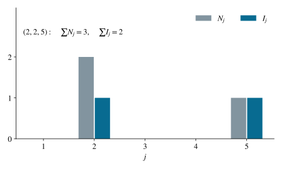

P0114 · 思维训练
三次有放回抽取中出现的不同球数
以每个球是否至少出现一次为指示变量，并用完整分布交叉核验。
1 题目
有五个大小质地相同的球，编号为 。每次等可能抽出一个，记下编号后放回，独立重复三次。令 为抽取中出现过的不同球的个数，求 。

重复抽到同一个球不会增加出现种数。
2 思路与提示
对每个编号，问它是否出现过，而不是计算它出现了几次。求“至少出现一次”可从补事件入手。
3 解答展开 / 收起
4 方法与讨论
抽取操作独立不意味着五个出现指示变量独立。期望相加没有用到后者；独立性只用于计算三次未抽中的概率。这种分清使用条件的方式可直接推广到收集、覆盖和占位问题。